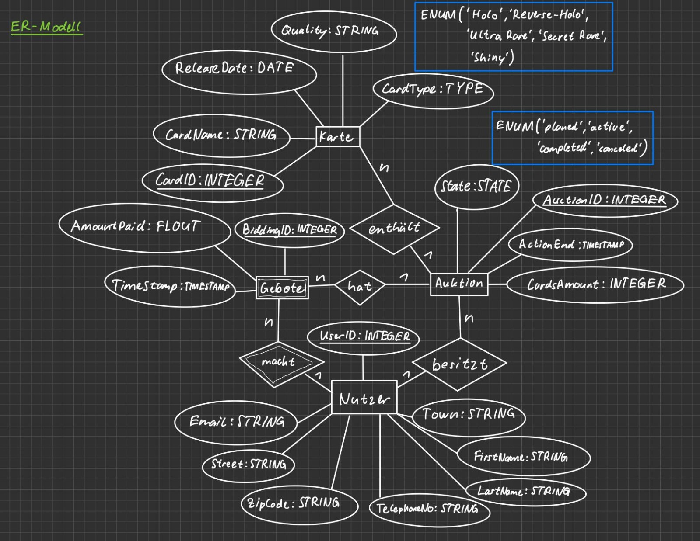
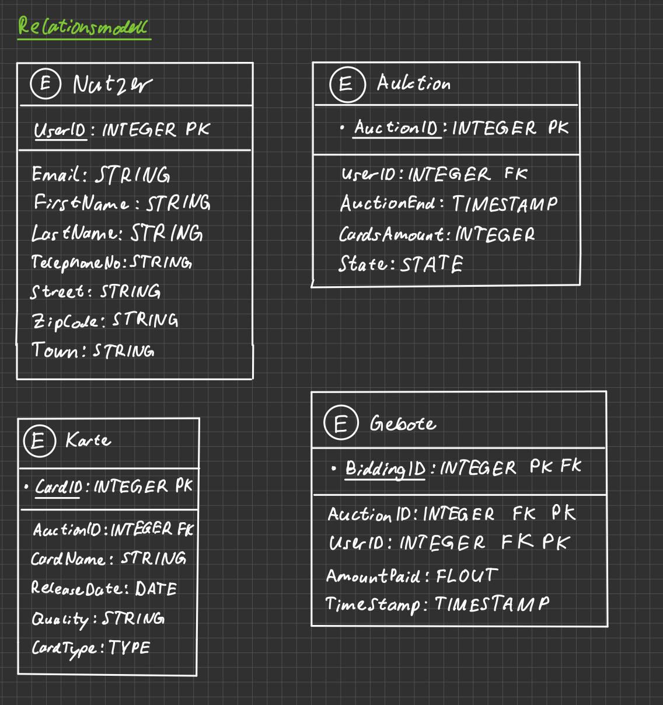

Bitte bereiten Sie die Lösungen sorgfältig vor. Laden Sie diese als zip-Archiv im Moodle hoch. Die Abgabedeadline steht im Moodle. Pro Hausübungsgruppe ist nur eine Abgabe notwendig. In der darauffolgenden Übung muss aber jeder Studierende in der Lage sein, die Lösungen zu erklären. Zum Bestehen der Hausübung müssen die Aufgaben überwiegend richtig gelöst sein. Das Bestehen liegt im Ermessen der Tutoren und Übungsbetreuer. Bei Fragen wenden Sie sich an ihre Tutoren..
Aufgabe 1: Kartenshop-Datenbank
In dieser Aufgabe sollen Sie eine Datenbank anhand einer Beschreibung der Funktionalitäten einer Webseite modellieren. Bei der Webseite handelt es sich um einen online Pokemon-Karten-Shop.
Aufgabenbeschreibung: Die fiktive Seite Cards4Evoli ist ein Pokemon TCG Marktplatz. Der Marktplatz erlaubt den Kauf und Verkauf von Karten zwischen Nutzern. Nutzer können Gebote auf die Auktionen anderer Nutzer abgeben in der Hoffnung Karten zu einem niedrigen Preis zu ergattern. Eine Auktion hat einen Status (geplant, aktiv, abgeschlossen oder abgebrochen), ein Ende und kann eine oder mehrere Karten beinhalten. Auktionen können immer einem Nutzer (Verkäufer) zugeordnet werden. Für jede Karte muss der Kartenname, der Qualitätszustand, das Jahr der Auflage und der Kartentyp (Holo, Reverse-Holo, Full-Art, Ultra Rare, Secret Rare oder Shiny) angegeben werden. Gebote für eine Auktion haben einen Zeitstempel, Geldbetrag und müssen einem potentiellen Nutzer (Käufer) zugeordnet werden.
Nach erfolgreichem Kauf erhalten Käufer und Verkäufer Zugriff auf die Kontaktdaten (Name, Telefon und E-Mailadresse). Auch die Adressen werden ausgetauscht, damit der Verkäufer die Karten an den Käufer schicken kann.
Erstellen Sie ein ER-Modell, das diese Anforderungen abbildet.
Überführen Sie das ER-Modell in das Relationen-Modell.
Prüfen Sie alle Regeln der ersten bis zur dritten Normalform. Falls ihr Modell nicht der 3NF entspricht, formen Sie es entsprechend um.
Aufgabe 2: MariaDB Tabellen und Inhalte
In dieser Aufgabe werden wir die Tabellen in einer MariaDB Datenbank anlegen und mit Beispielinhalten füllen. Nutzen Sie dafür die ihnen zur Verfügung gestellte MariaDB Datenbank auf dem THM-Server: ip1-dbs.mni.thm.de (Port: 3306). Benutzername und Passwort sind ihre THM-E-Mailadresse. Beachten Sie, dass der Datenbankserver nur aus dem THM-Netzwerk erreichbar ist. Benutzen Sie für ihre Tabellennamen einen Präfix, damit die Aufgabe nicht mit den Tabellen aus der Übung und dem Praxisblock kollidiert (z.B. "c4e_tablename")
Erstellen Sie die für die Datenbank notwendigen Tabellen. Setzen Sie hierfür möglichst genaue Wertebereiche fest.
Nutzer:
CREATE TABLE Alex_Nutzer (
UserID INTEGER AUTO_INCREMENT,
Email VARCHAR(50) NOT NULL,
FirstName VARCHAR(50) NOT NULL,
LastName VARCHAR(50) NOT NULL,
TelephoneNo VARCHAR(16) DEFAULT 'Hidden',
Street VARCHAR(50) NOT NULL,
ZipCode VARCHAR(10) NOT NULL,
Town VARCHAR(50) NOT NULL,
PRIMARY KEY (UserID));
Auktionen:
CREATE TABLE Alex_Auktion (
AuctionID INTEGER AUTO_INCREMENT,
Email VARCHAR(50),
UserID INTEGER,
AuctionEnd TIMESTAMP NOT NULL,
CardsAmount INTEGER NOT NULL,
State ENUM('planed', 'active', 'completed', 'canceled') NOT NULL,
PRIMARY KEY (AuctionID),
FOREIGN KEY (UserID) REFERENCES Alex_Nutzer(UserID));
Gebote:
CREATE TABLE Alex_Gebote (^
BiddingID INTEGER AUTO_INCREMENT,
AuctionID INTEGER,
UserID INTEGER,
AmountPaid DECIMAL(65, 2) NOT NULL,
TimeStamp TIMESTAMP NOT NULL,
PRIMARY KEY (BiddingID),
FOREIGN KEY (AuctionID) REFERENCES Alex_Auktion(AuctionID),
FOREIGN KEY (UserID) References Alex_Nutzer(UserID));
Karten:
CREATE TABLE Alex_Karte (
CardID INTEGER AUTO_INCREMENT,
AuctionID INTEGER,
CardName VARCHAR(50) NOT NULL,
ReleaseDate DATE NOT NULL,
Quality VARCHAR(50) NOT NULL,
CardType ENUM('Holo', 'Reverse-Holo', 'Ultra Rare', 'Secret Rare', 'Shiny'),
PRIMARY KEY (CardID),
FOREIGN KEY (AuctionID) REFERENCES Alex_Auktion(AuctionID));
Befüllen Sie ihre Datenbank mit Beispieldaten ("Dummydaten"). Ihre Datenbank soll mindestens 10 Auktionen und 20 Gebote von mindestens 5 Benutzern besitzen. Sie können dafür gerne Online-Tools wie Mockaroo verwenden.
5 Nutzer:
INSERT INTO Alex_Nutzer (Email, FirstName, LastName, TelephoneNo, Street, ZipCode, Town)
VALUES
('dhumbie0@joomla.org','Dodie','Humbie','317-518-6298','Westend 15','143082','Odintsovo'),
('apargiter1@vimeo.com','Abran','Pargiter','695-604-7234','Monica 20','2356','Īz̄eh'),
('bwarrener2@tmall.com','Breanne','Warrener','442-280-8376','Loeprich 12','9956','Kendaruan'),
('gtwidale3@uiuc.edu','Gauthier','Twidale','820-249-2559','Sutteridge 89','96-314','Baranów'),
('okarppi4@time.com','Olivette','Karppi','205-878-9881','Summit 32','965-98','Guradog');
10 Auktionen:
INSERT INTO Alex_Auktion (UserID, AuctionEnd, CardsAmount, State)
VALUES
(1, '2024-01-01 12:00:00', 1, 'active'),
(2, '2024-01-02 12:00:00', 2, 'active'),
(3, '2024-01-03 12:00:00', 1, 'planed'),
(4, '2024-01-04 12:00:00', 1, 'planed'),
(5, '2024-01-05 12:00:00', 3, 'completed'),
(2, '2024-01-06 12:00:00', 1, 'completed'),
(5, '2024-01-07 12:00:00', 2, 'active'),
(2, '2024-01-08 12:00:00', 1, 'planed'),
(3, '2024-01-09 12:00:00', 4, 'canceled'),
(1, '2024-01-10 12:00:00', 5, 'completed');
20 Gebote:
INSERT INTO Alex_Gebote (AuctionID, UserID, AmountPaid, TimeStamp)
VALUES
(1, 1, 100.50, '2024-12-01 10:00:00'),
(1, 2, 105.00, '2024-12-01 10:05:00'),
(2, 3, 200.75, '2024-12-02 11:00:00'),
(2, 4, 210.25, '2024-12-02 11:15:00'),
(3, 5, 150.00, '2024-12-03 12:30:00'),
(3, 1, 155.50, '2024-12-03 12:45:00'),
(4, 2, 300.00, '2024-12-04 14:00:00'),
(4, 3, 305.75, '2024-12-04 14:15:00'),
(5, 4, 450.50, '2024-12-05 15:00:00'),
(5, 5, 475.00, '2024-12-05 15:30:00'),
(6, 1, 120.00, '2024-12-06 16:00:00'),
(6, 2, 125.25, '2024-12-06 16:30:00'),
(7, 3, 250.50, '2024-12-07 17:00:00'),
(7, 4, 260.75, '2024-12-07 17:15:00'),
(8, 5, 350.00, '2024-12-08 18:00:00'),
(8, 1, 355.50, '2024-12-08 18:30:00'),
(9, 2, 400.75, '2024-12-09 19:00:00'),
(9, 3, 420.00, '2024-12-09 19:15:00'),
(10, 4, 500.25, '2024-12-10 20:00:00'),
(10, 5, 550.00, '2024-12-10 20:30:00');
(Zusatz) 10 Karten:
INSERT INTO Alex_Karte (CardName, ReleaseDate, Quality, CardType)
VALUES
('Pikachu', '2010-05-01', 'Mint', 'Holo'),
('Charizard', '2011-07-15', 'Near Mint', 'Ultra Rare'),
('Bulbasaur', '2012-09-10', 'Good', 'Reverse-Holo'),
('Squirtle', '2013-03-20', 'Excellent', 'Shiny'),
('Eevee', '2014-11-25', 'Mint', 'Holo'),
('Jigglypuff', '2015-06-30', 'Fair', 'Ultra Rare'),
('Mewtwo', '2016-04-18', 'Near Mint', 'Secret Rare'),
('Snorlax', '2017-08-22', 'Excellent', 'Holo'),
('Dragonite', '2018-10-01', 'Good', 'Reverse-Holo'),
('Gengar', '2019-12-15', 'Mint', 'Shiny');
UPDATE Alex_Karte
SET AuctionID = CASE CardID
WHEN 1 THEN 1
WHEN 2 THEN 2
WHEN 3 THEN 5
WHEN 4 THEN 4
WHEN 5 THEN 5
WHEN 6 THEN 2
WHEN 7 THEN 5
WHEN 8 THEN 2
WHEN 9 THEN 3
WHEN 10 THEN 1
END
WHERE CardID BETWEEN 1 AND 10;
Aufgabe 3: SQL Abfragen
Überlegen Sie sich die SQL-Anfragen für folgende Aufgaben. Testen Sie, ob die Anfragen korrekt sind mit ihrer Datenbank. Falls ihre Datenbank keine Ausgabe liefern kann, weil Sie die passenden Einträge nicht enthält dürfen Sie weitere Einträge der Datenbank hinzufügen.
Geben Sie den SQL-Befehl an, um die Auktion mit der ID 4 auf den Status "abgebrochen" zu setzen.
UPDATE Alex_Auktion
SET State = 'canceled'
WHERE AuctionID = 4;
Geben Sie den SQL-Befehl an, um mit einem Benutzer (ID=5) den Betrag 13,37 Euro auf die Auktion mit der ID 2 bieten zu lassen.
INSERT INTO Alex_Gebote (AuctionID, UserID, AmountPaid, TimeStamp)
VALUES (2, 5, 13.37, NOW());
Geben Sie den SQL-Befehl an, um Namen und E-Mailadressen aller Benutzer sortiert nach der Anzahl ihrer Auktionen ausgeben zu lassen.
SELECT
n.FirstName,
n.LastName,
n.Email,
-- Zählt Anzahl der AuctionID pro UserID und verknüpft die beiden Tabellen über die Spalte UserID
COUNT(a.AuctionID)
AS
AuctionCount
FROM
Alex_Nutzer n
LEFT JOIN
Alex_Auktion a
ON n.UserID = a.UserID
GROUP BY
n.UserID, n.FirstName, n.LastName, n.Email
ORDER BY
AuctionCount DESC; -- absteigend sortiert
Geben Sie den SQL-Befehl an, um sich alle "Glurak"-Karten aus aktiven Auktionen sortiert nach ihrer Qualität anzeigen zu lassen.
SELECT
k.CardName,
k.Quality,
k.CardType,
a.State
FROM
Alex_Karte k
JOIN
Alex_Auktion a
ON -- Verknüpfung der Tabellen über die AuktionID in der Karten-Tabelle
k.AuctionID = a.AuctionID
WHERE -- nur Glurak der mit aktiver Auktion
k.CardName = 'Charizard' AND a.State = 'active'
ORDER BY
k.Quality ASC; -- aufsteigend sortiert
Geben Sie den SQL-Befehl an, um den Karten eine Spalte "Ratingagentur" hinzuzufügen, welche den Qualitätszustand der Karte beurteilt hat.
ALTER TABLE Alex_Karte
ADD Ratingagentur VARCHAR(50) DEFAULT 'Unknown';
UPDATE Alex_Karte
SET Ratingagentur = CASE
WHEN CardName = 'Pikachu' THEN 'PSA'
WHEN CardName = 'Charizard' THEN 'Beckett'
WHEN CardName = 'Bulbasaur' THEN 'CGC'
WHEN CardName = 'Squirtle' THEN 'PSA'
WHEN CardName = 'Eevee' THEN 'CGC'
WHEN CardName = 'Jigglypuff' THEN 'PSA'
WHEN CardName = 'Mewtwo' THEN 'Beckett'
WHEN CardName = 'Snorlax' THEN 'PSA'
WHEN CardName = 'Dragonite' THEN 'CGC'
WHEN CardName = 'Gengar' THEN 'PSA'
ELSE 'Unknown' -- Für Karten ohne spezifische Agentur
END
WHERE CardName IS NOT NULL;
Lassen Sie sich alle Auktionen anzeigen, bei denen der Benutzer mit ID 3 das Höchstgebot abgegeben hat und welche den Status "abgeschlossen" besitzen.
SELECT
a.AuctionID,
a.UserID AS AuctionOwner,
a.State,
g.BiddingID,
g.AmountPaid,
g.UserID AS Bidder
FROM
Alex_Auktion a
JOIN
Alex_Gebote g
ON -- Verknüpfung der Tabellen über die AuktionID in der Auktion-Tabelle
a.AuctionID = g.AuctionID
WHERE
g.UserID = 3 AND
a.State = 'completed' AND
g.AmountPaid = ( -- Unterabfrage
SELECT MAX(g2.AmountPaid) -- maximaler Wert in der Zeile AmountPaid
FROM Alex_Gebote g2
WHERE g2.AuctionID = a.AuctionID
);
Benutzer mit der ID 2 möchte das Benutzerkonto und alle damit verknüpften Daten löschen. Geben Sie den SQL-Befehl dazu an. Was für Probleme könnten beim Löschen entstehen? Wie könnte man die Probleme vermeiden?
DELETE FROM Alex_Auktion
WHERE UserID = 2;
DELETE FROM Alex_Gebote
WHERE UserID = 2;
DELETE FROM Alex_Nutzer
WHERE UserID = 2;
Problem:
Wenn die Tabellen Fremdschlüsselbeziehungen haben und der Benutzer mit UserID = 2 in anderen Tabellen referenziert wird, blockiert die Datenbank den Löschvorgang. Alex_Auktion.UserID und Alex_Gebote.UserID sind Fremdschlüssel, die auf Alex_Nutzer.UserID zeigen. Beim Versuch, den Benutzer zu löschen, ohne vorher die abhängigen Daten zu entfernen, wird ein Fehler wie "Cannot delete or update a parent row: a foreign key constraint fails" ausgegeben.
Lösung:
SET FOREIGN_KEY_CHECKS = 0;
DELETE FROM Alex_Auktion
WHERE UserID = 2;
DELETE FROM Alex_Gebote
WHERE UserID = 2;
DELETE FROM Alex_Nutzer
WHERE UserID = 2;
SET FOREIGN_KEY_CHECKS = 1;